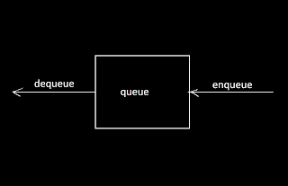
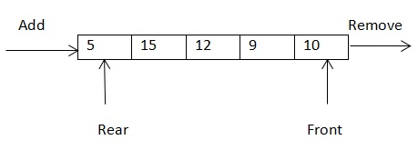

There are mainly two operations in queue
1. Enqueue
2. Dequeue

For better understanding,
Suppose we perform following operations on a queue ,predict the items in
the queue.
Let q be a queue // elements in queue
q.enqueue(10) // 10
q.enqueue(20) // 10 20
q.enqueue(15) // 10 20 15
q.dequeue() // 20 15
q.dequeue() // 15
q.enqueue(5) // 15 5
Queues are used in a lot of applications, few of them are:
Queue is used to implement many algorithms like Breadth First Search (BFS), etc.
It can be also used by an operating system when it has to schedule jobs with equal priority
Customers calling a call center are kept in queues when they wait for someone to pick up the calls

Queue using Arrays
we can’t change the size of an array, so we will make an array of fixed length first (this will be the maximum length of our queue) and then implement the queue on it.
We will use three pointers to implement the queue using an array, ‘size’, ‘front’ and ‘rear’. ‘front’ and ‘rear’ will simply store the indices of the front and rear elements respectively. We will use ‘size’ to store the current size of the queue.
We have made the values of ‘front’, ‘rear’ and ‘size’ -1 because the queue is not yet initialized. We will change these values according to our need after the initialization of the queue.
We just need to add an element at the index ‘rear+1’ and increase the value of the ‘rear’ and size by 1 for the enqueue operation.
The ‘dequeue’ operation is very simple using the array. We just need to decrease the ‘size’ by 1 and increase the ‘front’ by 1. That’s it.
Output:
80
90
100
150
Output: Value
Explanation
Deletion
1.For deletion purpose, it is first checked whether front is NULL, if it is NULL, we display the message “empty”.
2.In case the queue is not empty, deletion is done in such a way that temp pointer points to front and front pointer points to its next node.
3.After displaying data for the node to be deleted, node is deleted by delete function.
Insertion
1.In the insertion operation, temp points to the new node.
2.If this is first node to be inserted then front will be NULL and now both front and rear points to this new node.
3.If front is not NULL then insertion is similar to adding the node at the end of linked list. The next pointer of rear points to temp and rear becomes temp.
Practice questions
Disk towers ( HackerEarth )
Eerie planet ( HackerEarth )
Monk and chamber of secrets ( HackerEarth )
Queue using two stacks ( Hackerrank )
Truck tour ( Hackerrank )
Happy Coding 😊
By Programmers Army
Contributed by: Parakh Pratap Singh